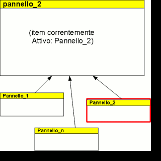

Il MultiPanel è un pannello utilizzato per realizzare pannelli mutevoli, ovvero che
assumono programmaticamente le sembianze di uno tra n pannelli possibili. Esiste anche la
possibilità di non visualizzare nessun pannello: in quesot cao il MultiPanel non produce nessuna
struttura visualizzata. Il MultiPanel è lo strumento principale da utilizzare nel caso in cui sia
necessaria la scomparsa di un intero pannello (cosa che non &egravE; possibile realizzare esclusivamente
con i comandi di visibilità sui Widget).
All'interno del singolo tab è possibile inserire tutte le tipologie di pannello disponibili.
| cod. | nome | descrizione |
|---|---|---|
| apparenza grafica | ||
| PMUL002 | card layout | Visualizza uno solo dei pannelli "inclusi" |
| dinamica di interazione | ||
| PMUL003 | elemento attivo persistente | Lo stato del pannello (ovvero l'informazione circa il pannello correntemente "attivo") è mantenuta durante la sessione utente |
| PMUL004 | attivazione item comandabile | E' possibile comandare da logica applicativa l'attivazione di uno degli elementi contenuti nel MultiPanel |
| PMUL005 | disattivazione totale | E' possibile non visualizzare nessuno degli elementi attivabili, in modo da nascondere competamente il pannello |
| PTAB009 | active item awareness | L'informazione di quale sial'item correntemente selezionato è a disposizione della logica applicativa |
| struttura | ||
| PMUL001 | contenimento pannelli | Può contenere (e dunque visualizzare uno per volta) le seguenti tipologie di pannello:
|
| PMUL006 | layout implicito | Il Multi Panel non ha un rendering proprio, ma assume di volta in volta quello dell'item correntemente attivo. Di conseguenza non è necessario specificare nessun layout |
|  |
| Esempio di multi panel |
Nella tabella seguente è riportato il grado di implementazione delle varie caratteristiche/funzioni dell'elemento MultiPanel nelle differenti implementazioni.
| cod | feature | guigen | |||
|---|---|---|---|---|---|
| 1.5.0 | 1.6.0 | ||||
| neutral-base | neutral-arricchita | neutral-base | neutral-arricchita | ||
| apparenza grafica | |||||
| PMUL002 | card layout |  |
|
|
|
| dinamica di interazione | |||||
| PMUL003 | elemento attivo persistente | |
|
|
|
| PMUL004 | attivazione item comandabile | |
|
|
|
| PMUL005 | disattivazione totale | |
|
|
|
| PTAB009 | active item awareness | |
|
|
|
| struttura | |||||
| PMUL001 | contenimento pannelli | |
|
|
|
| PMUL006 | layout implicito | |
|
|
|